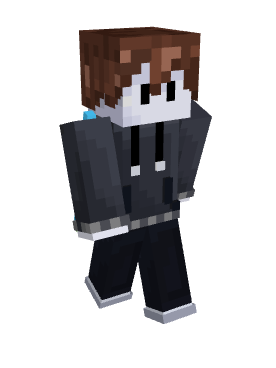
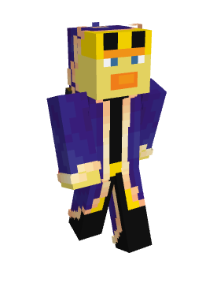
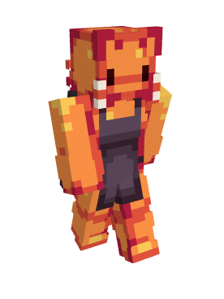

LeadCone_TNF

Лидкон_ТНФ, или же просто лидкон - главный администратор валтекрафта. Он владелец сервера и занимается его поддержкой.
- Участвовал во всех сезонах Валтеркрафта
- Житель ватерграда (2 сезон)
- Основатель спавна (3 сезон)
- Основатель платформы (4 сезон)
- Житель крайенбора (5 сезон)
rer_5111

Рер - совладелец сервера, вместе с лидконом. Он помогает с поддержкой сервера и организует ивенты.
- Информация
Kotyarendj

Котярендж - один из администраторов дискорда. Он следит за порядком на дискорд сервере, а также организует ивенты.
- Информация